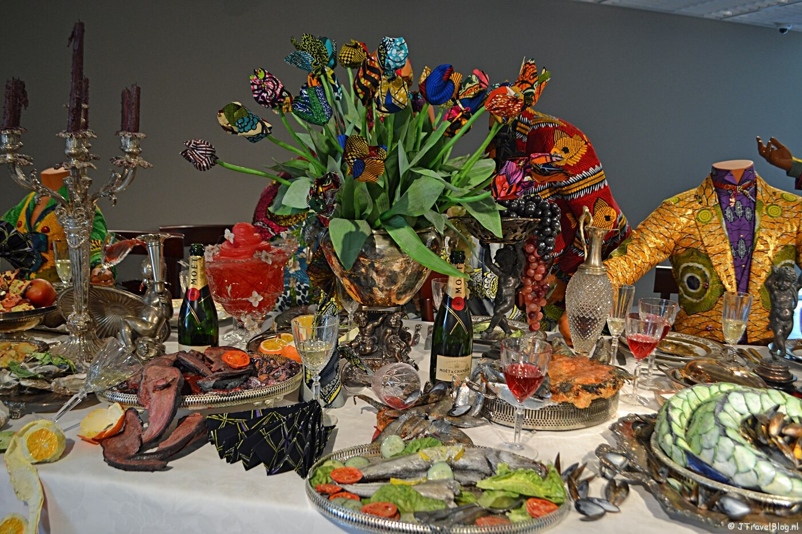
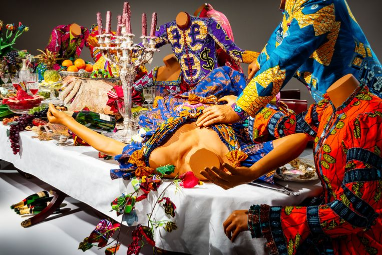
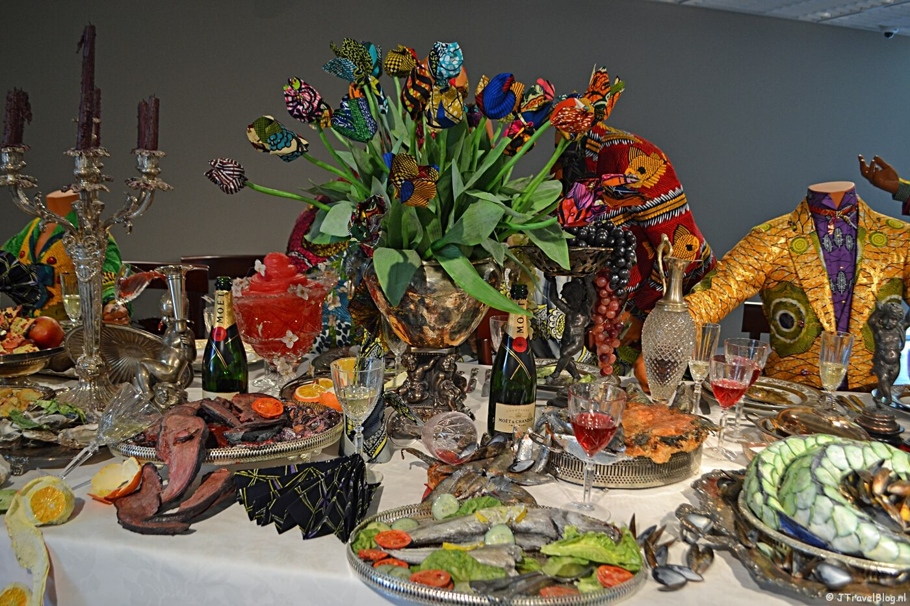
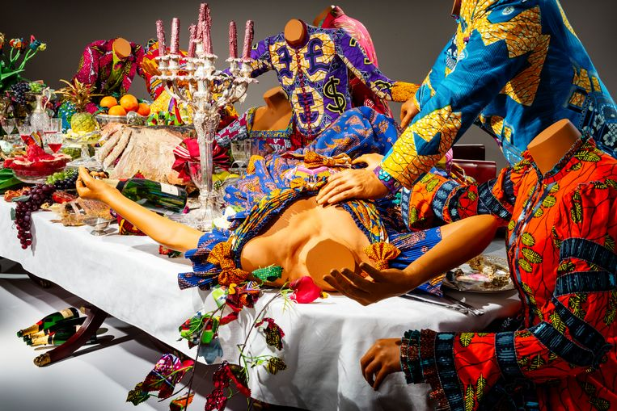

Welkom bij het LAM!
Welkom bij onze LAM WebXR webpagina! Hier vindt u alle informatie over wat het LAM. Zelfs de implematatie van Virtual Reality is terug te vinden op deze website. Voor een kijkje binnen het Lisser Art Museum bent u hier op de juiste plek. Het gebouw van Lisser Art Museum is een erg modern gebouw ontworpen door Arie Korbee van KVDK Architecten in 2015. Het museum bevindt zich op een aparte plek. Het gebouw bevindt zich op het landgoed van Keukenhof. Het bijzondere van het gebouw is dat er verschillende elementen van een boom terugkeren in het ontwerp van het gebouw. Op deze manier vormt het moderne gezicht van het LAM museum een spannend contrast met het klassieke kasteel van Keukenhof. Het in 2018 geopende LAM heeft als speciaal kenmerk eem openbaar pad dat dwars door het museum loopt. Op deze manier kunnen mensen altijd de kunst beleven zonder dat ze het museum bezoeken. Het museum is door verschillende internationale architectuurprijzen genomineerd.
Wat is het LAM museum?
Het LAM museum staat voor Lisser Art Museum. Het LAM museum komt voort uit de VandenBroek Foundation die kunst toegangelijk wil maken voor een breed publiek. Wat verassend is aan de kunstwerken in het LAM museum is dat, alle schilderijen, foto's, kunstwerken, instalatie video's en digitalen kunstwerken uit verschillende eeuwen en die vanuit verschillende stromingen zijn gekomen. Het gemeenschappelijk karakter is dat in alle stukken voedsel en comsuptie centraal staat. Daarnaast heb je bij het museum van LAM geen kunst kennis nodig om te genieten van de kunstwerkenn daar algemene kennis een perect uitgangspunt is. De doelgroep is mede hierdoor zeer breed. Het Lisser Art Museum staat bekend als het foodart museum van de wereld. Aangezien het gloednieuw en bomvol staat met inernationale topstukken van grootse kunstwerken. Het Lisser Art museum wordt vooral gezien als innovatief en zeer toegangkelijk. Van realistisch tot abstracte kunst. Kortom het LAM is voor alle leeftijden van jong tot en met oud. Dit komt door de persoonlijke aanpak dat hoog in vaadel staat van de LAM. Op deze manier krijg je een kunst ervaring op maat en geniet iedereen enorm van het bezoek aan het museum.
About Us Developers
Wij zijn de ontwerpers en developers van deze webpagina. Wij zijn eerste jaars opkomende softwaredevelopers in opleiding van het Mediacollege in Amsterdam. Dit is een eindopdracht voor onze beroeps leerweg. De opdracht was het maken van een WebXR site over het bekende museum lisser art museum met als doelstelling het genereren van zoveel mogelijk bezoekers op de website. Tevens was het doel het bieden an een real life experience in het museum door middel van een virtual reality element te implanteren.
 


